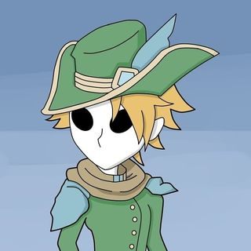

Old King
Trever's Social Distancing Portfolio
Home
Contact
About
Aspiring Video Editor, Illustrator
Alfred State College
Old King:
The Old King is the idea of what the result of power can lead to. Being alone and forgotten
© Copyright info, 2021